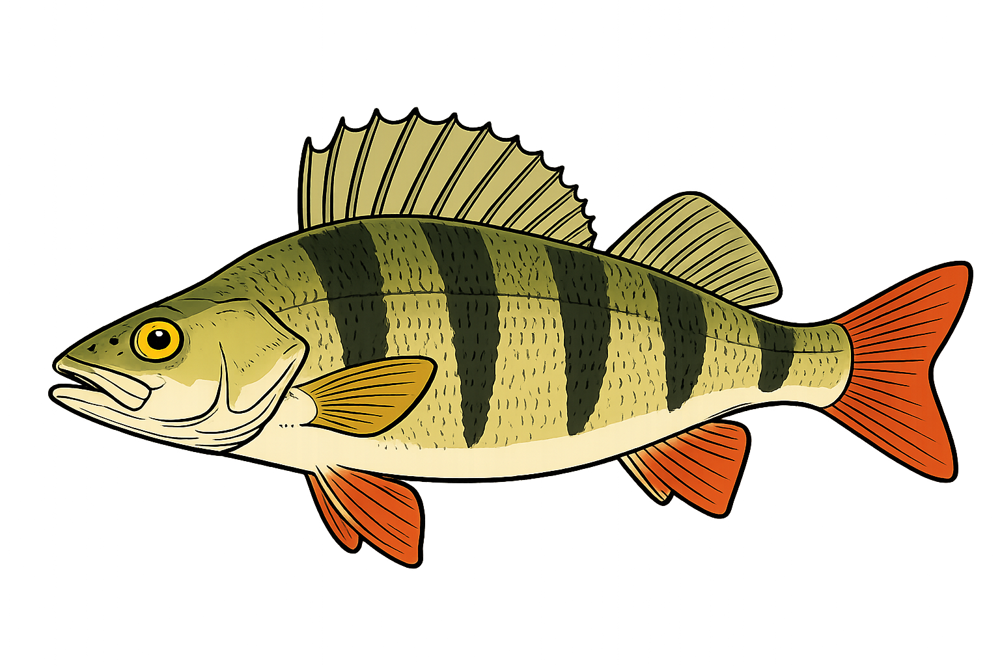

(A Sunday. Glorious weather. The New Student and the First Student in a small rowing boat on the lake. The First Student holds a fishing rod.)
The First StudentI can feel something.
(They both look at the line. It begins to move.)
The First StudentI think it's a little one.
(The line goes slack and still.)
The First StudentLet's wait for a bigger one.
The New StudentI feel like I'm on the hook.
The First StudentBecause of that surprise visit the other day?
The New StudentYes. It was such an embarrassment. I can see it in the others' eyes.
The First StudentPapperlapp.
The New StudentEasy for you to say.
The First StudentI only speak the truth.
(A beat.)
The First StudentAlways.
The New StudentDon't tell me you never lie.
The First StudentNot in the common sense.
The New StudentShe told me she had only accepted because she wanted to look after me. To see if I'm happy here.
The First StudentAre you?
The New StudentI'm not sure. Right now, on this lake... with you... I am.
The First StudentGood to hear.
(The line begins to move violently.)
The First StudentOh, that's a big one!
(The line pulls hard. The rod bends. The boat rocks. There is a struggle for a minute.)
(The line goes slack.)
The First StudentGone.
The New StudentI thought this would be easier.
The First StudentIt's always a struggle.
(A beat.)
The First StudentEverything is.
The New StudentYou make it look so easy.
The First StudentThe fishing?
The New StudentIt's as if... you belong here.
The First StudentMe? The scholarship boy?
The New StudentYes. You.
The First StudentI'm taking in as much as I can.
The New StudentI hope I'm going to survive next week.
The First StudentYou will.
The New StudentYou are always so... so confident.
The First StudentWhen it comes to you and your mum, I am.
(A beat.)
The New StudentDidn't you find her small... next to Catherine?
The First StudentNot at all. She's the future.
(A beat.)
The First StudentAnd you will get your horse. I'd say there will be a trailer coming next week.
The New StudentFor a new movie?
The First StudentWith your horse.
The New StudentI very much doubt that.
The First StudentYou wanna bet?
The New StudentA tenner?
The First StudentIt would be unethical of me to accept this.
The New StudentI don't see why.
The First StudentDo I really have to spell it out?
The New StudentI'm quite lost. Why don't you?
The First StudentI talked to a certain someone.
The New StudentTo him?
The First StudentYes. To him.
The New StudentAnd he will buy me a horse?
The First StudentDon't be so thick.
(The line begins to move. Not quite as violently as before, but the rod bends. A brief struggle ensues. The First Student brings out a fish, some thirty centimetres long.)
The New StudentA perch!
(The First Student takes the fish in his hands and holds it up.)
The First StudentLook at these colours.
(He unhooks it carefully.)
The First StudentShall we give him back his freedom?
The New StudentI think we should eat him.
(The First Student kills the fish with a sharp blow to the head.)